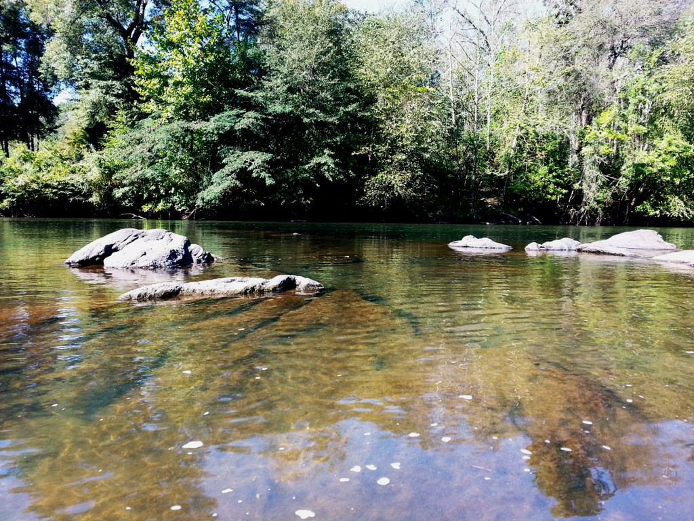
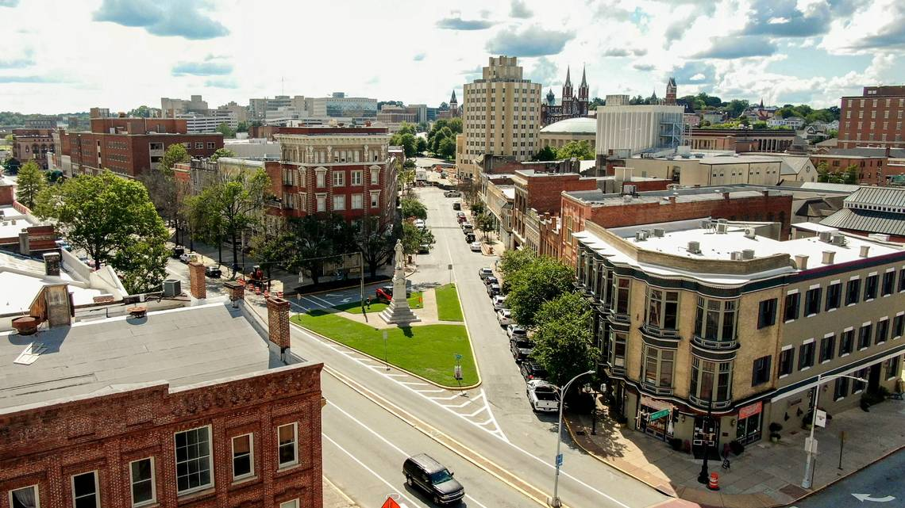

Discover Macon
Explore the rich history of Macon, Georgia.
City Information
| Population: | Year Incorporated: | Region: | Classification: | Average Income: |
|---|---|---|---|---|
| 153,095 | 1823 | Central Georgia | Suburban | $47,832 |
Top Three Attractions
- Amerson River Macon park 
- Macon Historic District 
- St. Joseph Catholic Church